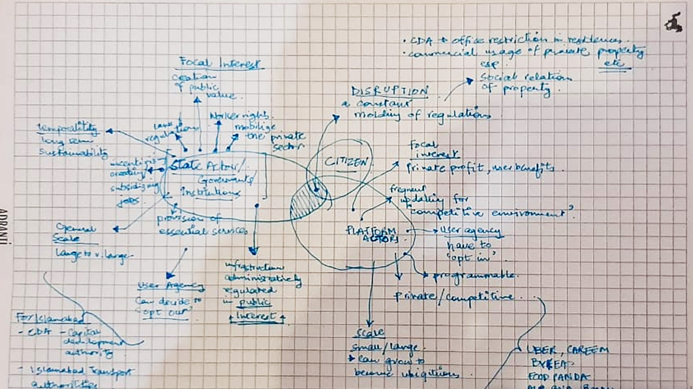

Gentrification and the Financialization of Housing
Thoughts on the gentrification and the Pakistani housing crisis
The absence of effective urban planning in Pakistan has led to rampant rural-to-urban migration, exacerbating economic disparities and fostering a sense of deprivation among the working class. The country faces an annual housing demand of approximately 350,000 units, with 62% required for lower-income groups, 25% for lower-middle-income groups, and only 10% for upper-middle and higher-income groups. However, the formal housing supply meets just 150,000 units annually, leaving a significant shortfall. This gap is largely addressed through informal settlements, which manifest in two forms: the unauthorized occupation and subdivision of government land, known as katchi abadis, and the informal subdivision of agricultural land (ISALs) on urban peripheries. Over the past two decades, a third method of addressing demand has emerged: the densification of existing low-income and lower-middle-income settlements.
Despite the severity of the housing crisis, state-sponsored low-cost housing initiatives—such as Punjab's Apna Ghar Scheme, Sindh’s Behan Benazir Basti (Benazir Housing Program), and the Shaheed Benazir Bhutto Housing Scheme—have failed to deliver consistent or complete solutions. This lack of progress underscores the need for active and sustained state intervention. In the absence of such involvement, private developers have taken control of formal housing supply, prioritizing profit margins over equitable access. As a result, only 1% of new housing units cater to the 68% of the population earning a maximum monthly income of PKR 30,000, while 56% of housing units are targeted at the 12% earning over PKR 100,000. The housing backlog, currently estimated at 12 million units, continues to grow, driving the expansion of katchi abadis and placing immense financial strain on average-income households.
The Dual Faces of Gentrification in Urban Pakistan
Gentrification in Pakistan manifests in two distinct forms: Urban Renewal and Restoration: Disinvested urban areas, such as Saddar and inner-city Lahore, undergo aggressive redevelopment, displacing lower-income households in the process. Low-Density Gated Communities: Peri-urban and peri-central areas are increasingly dominated by gated housing schemes catering to affluent lifestyles. These developments displace rural communities and lower-income groups, creating exclusivity at the expense of inclusivity. In addition to these trends, anti-encroachment drives in major cities like Islamabad, Lahore, and Karachi have displaced millions of informal settlers. These programs often prioritize the creation of formal commercial and residential hubs over the housing needs of vulnerable populations. The resulting urban renewal programs and land reutilization strategies further fuel Pakistan's burgeoning real estate market, driving up land and rental costs.
The Role of Housing Financialization in Exacerbating Inequality
Pakistan’s housing crisis is further compounded by limited access to housing finance. Mortgage facilities, which form the backbone of real estate markets globally, remain underdeveloped in Pakistan. Financing from commercial banks is predominantly available to high-income earners, and the House Building Finance Corporation—once a cornerstone of housing finance—has significantly reduced its loan disbursements. While there are signs of improvement, with current mortgage rates between 15% and 18% (the lowest in a decade), these rates are still significantly higher than those in neighboring countries such as India (8–12%), China (7–8%), and Japan (2.7%). Consequently, homeownership remains out of reach for most lower- and middle-income groups.
Moreover, the financialization of land as a speculative asset has distorted market dynamics. Landowners in gentrifying urban areas reap disproportionate financial benefits, while the majority of the population is excluded from homeownership opportunities. Despite claims that 75% of Pakistanis own their homes, this figure primarily reflects rural ownership, where traditional housing patterns predominate. In urban areas, the percentage of renters is far higher, further highlighting the inequities exacerbated by gentrification.
The Path Forward: Bridging the Divide
The dire state of urban housing in Pakistan and the unchecked financialization of the sector perpetuate an entrenched cycle of inequality and exclusion. Gentrification, in its various forms, exacerbates this divide, favoring affluent groups while pushing lower- and middle-income households to the periphery of urban life—both physically and economically. Without a paradigm shift in housing policy and urban planning, the country risks deepening its socio-economic disparities, further alienating large segments of the population from access to adequate housing.
The solution lies in adopting a multifaceted approach that prioritizes inclusivity and equity. A robust and sustained commitment from the state is imperative to develop and implement policies that address the root causes of the housing crisis. Comprehensive urban planning must go beyond short-term, project-based interventions to encompass long-term strategies that integrate housing, transportation, and employment opportunities. Policies must be rooted in the understanding that housing is not just a commodity but a fundamental human right and a cornerstone of social stability.
In addition, addressing the financial barriers to homeownership is essential. Expanding affordable housing finance options, such as subsidized mortgage rates and micro-loans for low-income families, could transform the housing landscape. Public-private partnerships could be leveraged to develop mixed-income housing projects that promote socio-economic integration rather than segregation. Moreover, stricter regulations on speculative real estate practices and the creation of incentives for developers to build affordable housing units could help counterbalance the profit-driven motives of the private sector.
Urban renewal and anti-encroachment drives must also be reimagined. Instead of displacing vulnerable communities, these initiatives should include participatory planning processes that engage local residents and prioritize their needs. The rehabilitation and formalization of informal settlements could offer a more humane and sustainable alternative to forced evictions, ensuring that urban development benefits all strata of society.
Finally, there is a pressing need to challenge the cultural and systemic biases that prioritize high-end development over equitable access to resources. Civil society organizations, urban planners, and policymakers must work together to shift the narrative around urban development, advocating for cities that are inclusive, resilient, and reflective of the diverse needs of their populations.
In conclusion, Pakistan’s urban housing crisis is not an insurmountable challenge, but it requires bold action, innovative thinking, and sustained commitment from both public and private sectors. By addressing the structural inequalities inherent in the current system and fostering an environment of inclusivity, Pakistan can pave the way for cities that are not only functional but also just. The future of urban Pakistan hinges on its ability to embrace these changes, ensuring that housing is a source of empowerment rather than a marker of division.